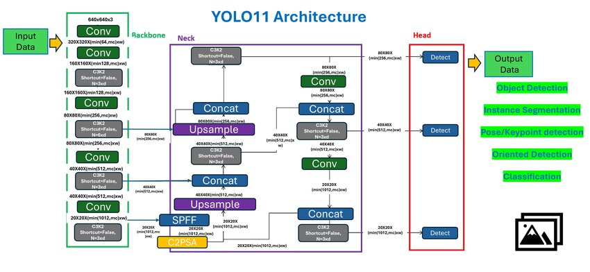
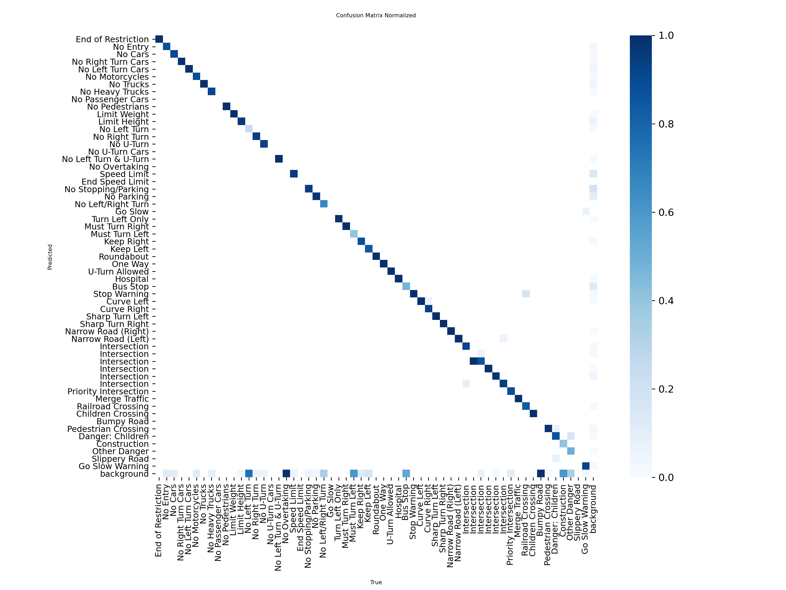
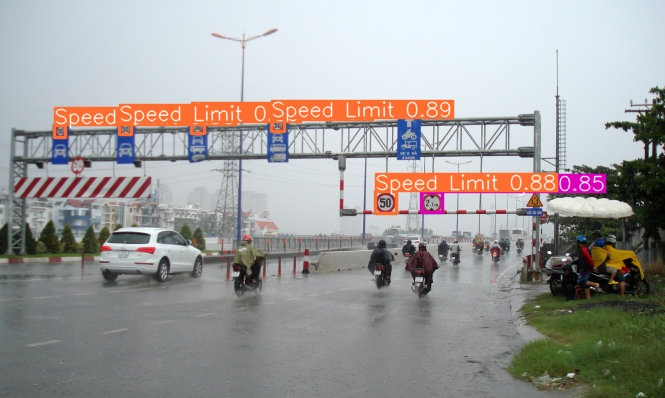

Abstract
We developed a computer vision system using state-of-the-art YOLOv11 to automatically detect and recognize 58 classes of Vietnamese traffic signs. Optimized for the chaotic mixed-traffic environment of Vietnam, the model handles challenges like occlusion, poor lighting, and weather conditions.
Achieving 90% mAP@50 and real-time processing speeds (>30 FPS) on a Tesla T4, this solution aims to assist ADAS and autonomous driving technologies.
Live Demo
Real-time inference on Ho Chi Minh City streets.
Methodology
Our approach leverages YOLOv11 with key architectural innovations tailored for small object detection:
- C3k2 Architecture: Enhanced feature extraction backbone for multi-scale representations.
- C2PSA Module: Spatial attention tailored to highlight compact objects at long range.
- Data Augmentation: Mosaic, Mixup, and HSV lighting adjustments.

Figure 1: The proposed YOLOv11 pipeline adaptations.
Quantitative Results
| Metric | Value | Interpretation |
|---|---|---|
| Precision | 0.883 | High reliability in positive predictions |
| Recall | 0.900 | Detects 90% of real-world signs |
| mAP@50 | 90.0% | Excellent overall accuracy |
| mAP@50-95 | 74.5% | Strong localization performance |

Confusion Matrix (58 Classes)

Robustness against occlusion & rain
BibTeX Citation
@article{vgu2025traffic,
title={Real-Time Vietnamese Traffic Sign Detection using YOLOv11},
author={Le, Nhat Thong et al.},
institution={Vietnamese-German University},
year={2025}
}